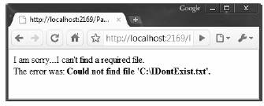

Every ASP.NET web page has a fixed life cycle. When the ASP.NET runtime receives an incoming request for a given *.aspx file, the associated System.Web.UI.Page-derived type is allocated into memory using the type’s default constructor. After this point, the framework will automatically fire a series of events. By default, the Load event is automatically accounted for, where you can add your custom code:
public partial class _Default : System.Web.UI.Page { protected void Page_Load(object sender, EventArgs e) { Response.Write("Load event fired!"); } }
Beyond the Load event, a given Page is able to intercept any of the core events in Table 32-8, which are listed in the order in which they are encountered (consult the .NET Framework 4.0 SDK documentation for details on all possible events that may fire during a page’s lifetime).
Table 32-8. Select Events of the Page Type
| Event | Meaning in Life |
|---|---|
| PreInit | The framework uses this event to allocate any web controls, apply themes, establish the master page, and set user profiles. You may intercept this event to customize the process. |
| Init | The framework uses this event to set the properties of web controls to their previous values via postback or view state data. |
| Load | When this event fires, the page and its controls are fully initialized, and their previous values are restored. At this point, it is safe to interact with each web widget. |
| “Event that triggered the postback” | There is, of course, no event of this name. This “event” simply refers to whichever event caused the browser to perform the postback to the web server (such as a Button click). |
| PreRender | All control data binding and UI configuration has occurred and the controls are ready to render their data into the outbound HTTP response. |
| Unload | The page and its controls have finished the rendering process, and the page object is about to be destroyed. At this point, it is a runtime error to interact with the outgoing HTTP response. You may, however, capture this event to perform any page-level cleanup (close file or database connections, perform any form of logging activity, dispose of objects, etc.). |
When a C# programmer needs to handle events beyond Load, you may be surprised to find that there is no IDE support to do so! Rather, you must manually author a method in your code file taking the name Page_NameOfEvent. For example, here is how you can handle the Unload event:
public partial class _Default : System.Web.UI.Page { protected void Page_Load(object sender, EventArgs e) { Response.Write("Load event fired!"); } protected void Page_Unload(object sender, EventArgs e) { // No longer possible to emit data to the HTTP // response, so we will write to a local file. System.IO.File.WriteAllText(@"C:\MyLog.txt", "Page unloading!"); } }
Note Each event of the Page type works in conjunction with the System.EventHandler delegate; therefore, the subroutines that handle these events always take an Object as the first parameter and an EventArgs as the second parameter.
When you wish to handle events for your page, you will need to update your <script> block or codebehind file with an appropriate event handler. However, if you examine the <%@Page%> directive, you will notice a specific attribute named AutoEventWireUp, which, by default, is set to true:
<%@ Page Language="C#" AutoEventWireup="true"
CodeFile="Default.aspx.cs" Inherits="_Default" %>
With this default behavior, each page-level event handler will automatically be handled if you enter the appropriately named method. However, if you disable AutoPageWireUp by setting this attribute to false
<%@ Page Language="C#" AutoEventWireup="false"
CodeFile="Default.aspx.cs" Inherits="_Default" %>
the page-level events will no longer be captured. As its name suggests, this attribute (when enabled) will generate the necessary event riggings within the autogenerated partial class described earlier in this chapter. Even if you disable AutoEventWireup, you can still process page-level events by making use of C# event-handling logic, for example:
public _Default() { // Explicitly hook into the Load and Unload events. this.Load += new Page_Load; this.Unload += new Page_Unload; }
As you might suspect, you will usually leave AutoEventWireup enabled.
Another event that may occur during your page’s life cycle is Error. This event will be fired if a method on the Page-derived type triggered an exception that was not explicitly handled. Assume that you have handled the Click event for a given Button on your page, and within the event handler (which I named btnGetFile_Click), you attempt to write out the contents of a local file to the HTTP response.
Also assume you have failed to test for the presence of this file via standard structured exception handling. If you have rigged up the page’s Error event in the default constructor, you have one final chance to deal with the problem on this page before the end user finds an ugly error. Consider the following code:
public partial class _Default : System.Web.UI.Page { void Page_Error(object sender, EventArgs e) { Response.Clear(); Response.Write("I am sorry...I can't find a required file.<br>"); Response.Write(string.Format("The error was: <b>{0}</b>", Server.GetLastError().Message)); Server.ClearError(); } protected void Page_Load(object sender, EventArgs e) { Response.Write("Load event fired!"); } protected void Page_Unload(object sender, EventArgs e) { // No longer possible to emit data to the HTTP // response at this point, so we will write to a local file. System.IO.File.WriteAllText(@"C:\MyLog.txt", "Page unloading!"); } protected void btnPostback_Click(object sender, EventArgs e) { // Nothing happens here, this is just to ensure a // postback to the page. } protected void btnTriggerError_Click(object sender, EventArgs e) { System.IO.File.ReadAllText(@"C:\IDontExist.txt"); } }
Notice that your Error event handler begins by clearing out any content currently within the HTTP response and emits a generic error message. If you wish to gain access to the specific System.Exception object, you may do so using the HttpServerUtility.GetLastError() method exposed by the inherited Server property:
Exception e = Server.GetLastError();
Finally, note that before exiting this generic error handler, you are explicitly calling the HttpServerUtility.ClearError() method via the Server property. This is required, as it informs the runtime that you have dealt with the issue at hand and require no further processing. If you forget to do so, the end user will be presented with the runtime’s error page. Figure 32-24 shows the result of this error-trapping logic.
Figure 32-24 Page-level error handling
At this point, you should feel confident with the composition of an ASP.NET Page type. Now that you have such a foundation, you can turn your attention to the role of ASP.NET web controls, themes, and master pages, all of which are the subject of remaining chapters. To wrap up this chapter, however, let’s examine the role of the Web.config file.